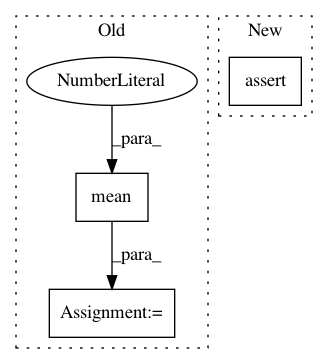

8a04fa2c91f52a9c551849812d450079e667b16a,src/networks.py,LayerNorm,forward,#LayerNorm#Any#,464
Before Change
return
def forward(self, x):
shape = [-1] + [1]*(x.dim() - 1)
mean = x.view(x.size(0), -1).mean(1).view(*shape)
std = x.view(x.size(0), -1).std(1).view(*shape)
x = (x - mean) / (std + self.eps)
if self.affine:
shape = [1, -1] + [1]*(x.dim() - 2)
After Change
//mean = x.view(x.size(0), -1).mean(1).view(*shape)
//std = x.view(x.size(0), -1).std(1).view(*shape)
//// work for batch size = 1
assert(x.size(0) == 1)
mean = x.mean()
std = x.std()
x = (x - mean) / (std + self.eps)
if self.affine:
In pattern: SUPERPATTERN
Frequency: 4
Non-data size: 3
Instances
Project Name: HsinYingLee/DRIT
Commit Name: 8a04fa2c91f52a9c551849812d450079e667b16a
Time: 2018-07-28
Author: hytseng0509@gmail.com
File Name: src/networks.py
Class Name: LayerNorm
Method Name: forward
Project Name: scikit-learn/scikit-learn
Commit Name: 4f496868c6aa7f50db99229847285efbe50040c2
Time: 2020-08-03
Author: 34657725+jeremiedbb@users.noreply.github.com
File Name: sklearn/cluster/tests/test_k_means.py
Class Name:
Method Name: test_n_init
Project Name: tensorflow/models
Commit Name: 8da4857396fcedb1abd19a08cd4de40d16c7bc50
Time: 2020-08-17
Author: 30733558+plakal@users.noreply.github.com
File Name: research/audioset/yamnet/yamnet_test.py
Class Name: YAMNetTest
Method Name: clip_test
Project Name: freelunchtheorem/Conditional_Density_Estimation
Commit Name: aa50234c0e3854567214a3109188ee9bedc33551
Time: 2019-01-18
Author: jonas.rothfuss@gmx.de
File Name: cde/BaseConditionalDensity.py
Class Name: ConditionalDensity
Method Name: _conditional_value_at_risk_mc_pdf